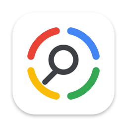

Halo Search
Circle anything on your Mac. Ask Google about it.
Free and open source · macOS 14 and later · MIT License
AI Mode + Lens
Circle something and get an answer about it, with visual matches beside it.
Reads any text
Scribble over words on screen to search exactly that text, recognised on-device.
Native & light
Swift and AppKit, living in your menu bar behind one shortcut.
Private by default
Nothing leaves your Mac until you make a selection.